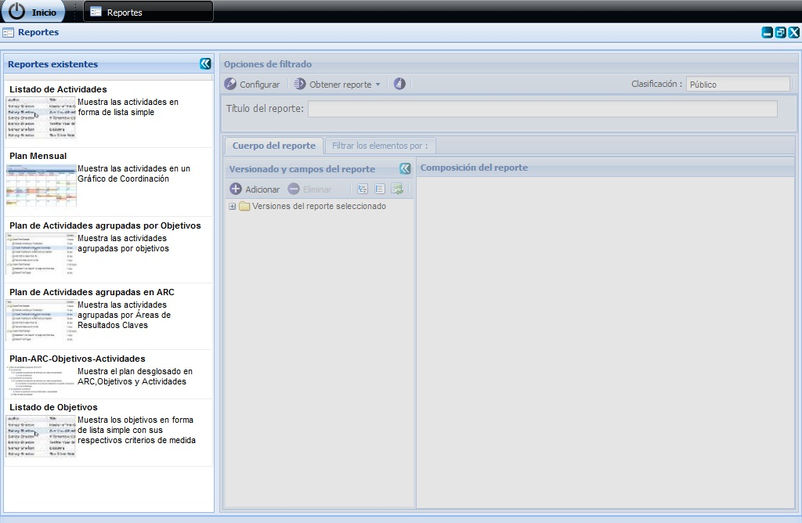
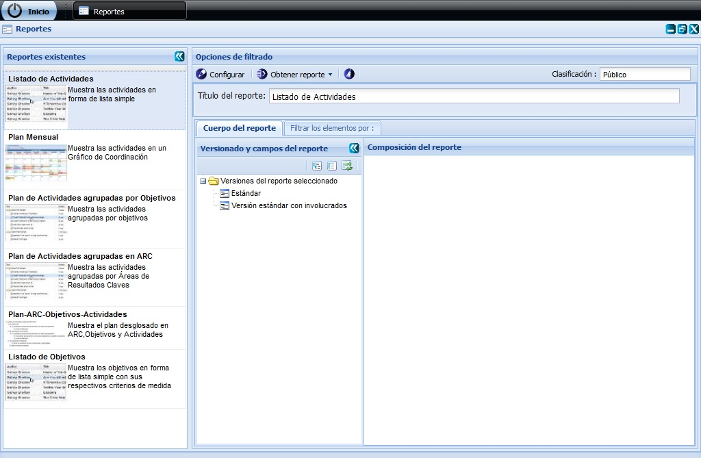
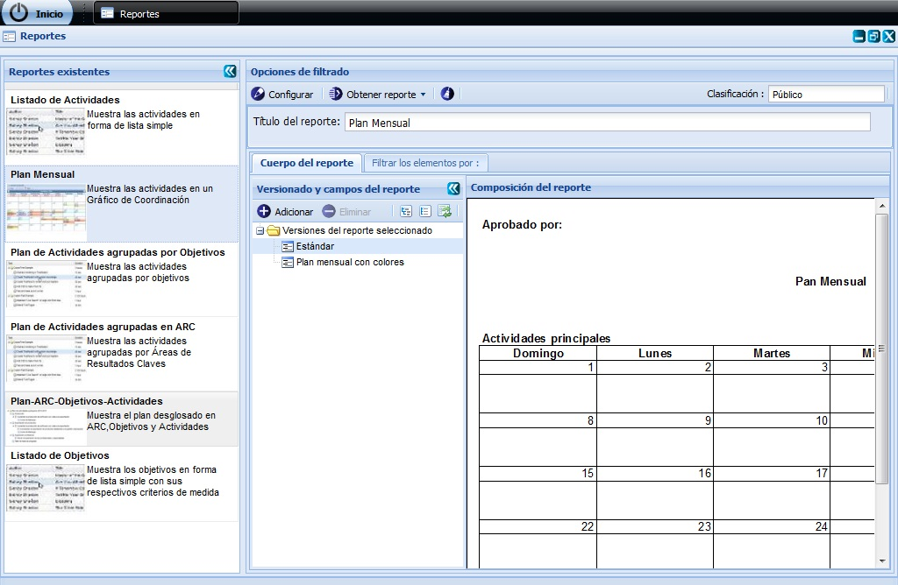
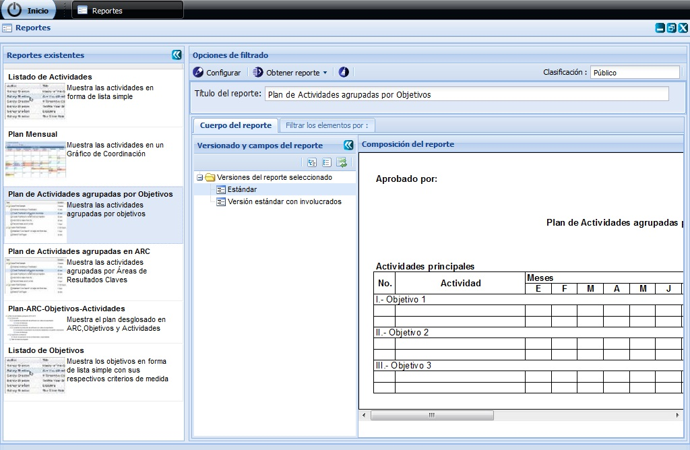
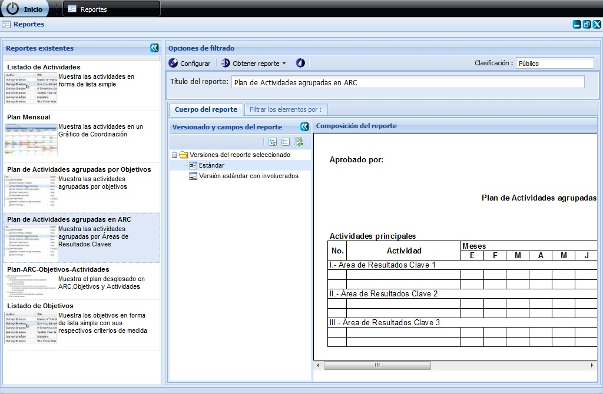
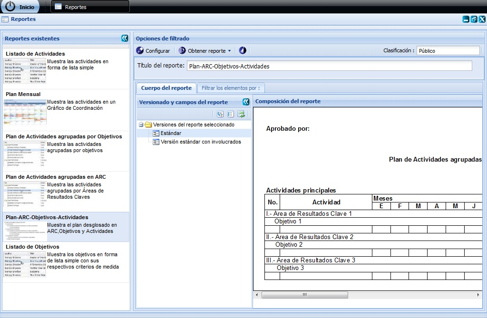
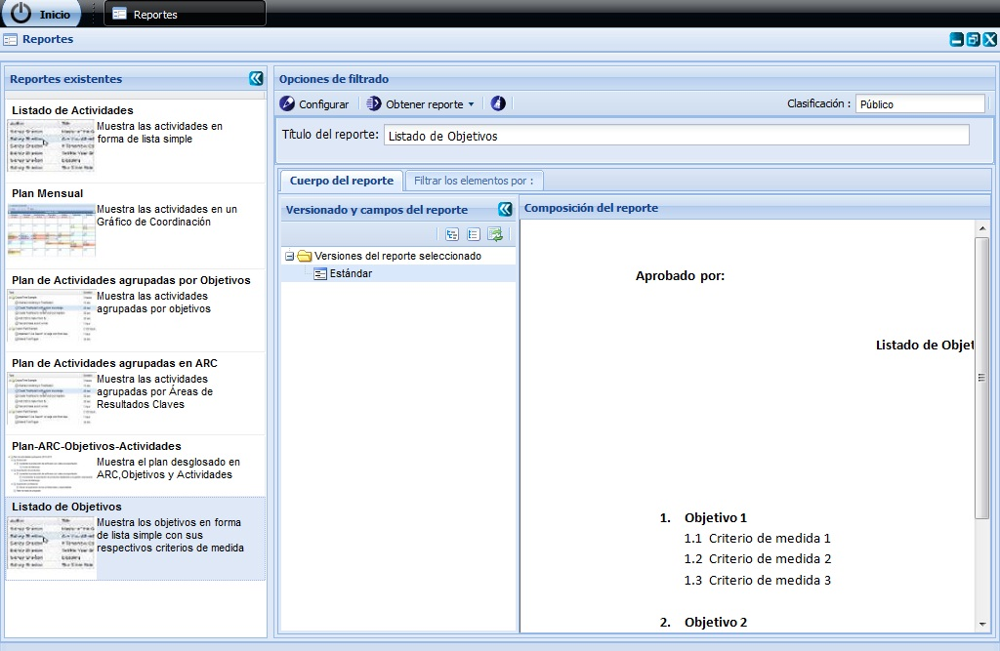
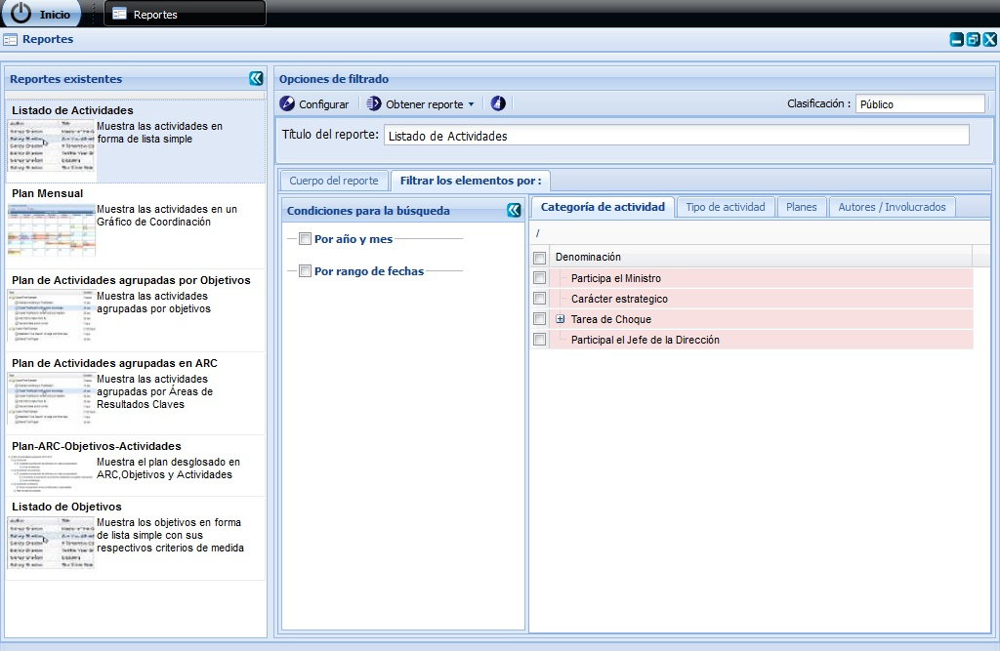

--Reportes--
Para acceder a esta funcionalidad el usuario debe estar autenticado y debe seleccionar la ruta: Inicio/Planificación/Planificación de actividades/Recuperaciones/Reportes.
Como recuperaciones del sistema se entiende, al marco de Reportes que se pueden obtener con la información que ha sido almacenada previamente. Los reportes muestran al usuario la información organizada en un formato desde el cual se puede imprimir para ser distribuido. A continuación se explican las características de los reportes que han sido configurados para el Sistema de Planificación de actividades. La Figura 1 muestra la interfaz principal de las recuperaciones del sistema. En el panel izquierdo están los reportes existentes, donde se podrá seleccionar el tipo de reporte que se desea consultar.

Figura 1. Interfaz principal de las recuperaciones del sistema.
Los reportes que brinda el sistema son: Listado de Actividades (Figura 2); Plan Mensual (Figura 3); Plan de Actividades agrupadas por Objetivos (Figura 4); Plan de Actividades agrupadas en ARC (Figura 5); Plan-ARC-Objetivos-Actividades (Figura 6); Listado de Objetivos (Figura 7).
Para acceder a la composición de cada reporte doy clic en Versiones del reporte seleccionado y selecciono el Estándar del reporte, para que se vea más completo debe dar clic a la doble saeta.

Figura 2. Configuración del reporte Listado de Actividades.

Figura 3. Configuración del reporte Plan Mensual.

Figura 4. Plan de Actividades agrupadas por Objetivos.

Figura 5. Plan de Actividades agrupadas por ARC.

Figura 6. Plan-ARC-Objetivos-Actividades.

Figura 7. Listado de Objetivos.
El panel Opciones de filtrado contiene además un conjunto de pestañas que ayudarán a la configuración del reporte. Estas pestañas permiten filtrar según datos específicos de las actividades como categoría de la actividad (Por Categoría de actividad) o tipo de actividad (Por Tipo de actividad), permite seleccionar el plan (Desde Planes), filtrar según el autor o los involucrados en el tipo de elemento de la planificación que se está consultando (Por Autores/Involucrados). Ver figura 8.

Figura 94. Panel Filtrar los elementos.
El panel Opciones de filtrado contiene los botones Configurar el encabezado y pie de firma del reporte, Obtener reporte (que contiene el Vista previa y Exportar a) y el botón Limpiar filtro(s). El primero permite al usuario elegir si en el reporte se mostrará el encabezado y el pie de firma. La opción Vista previa permite al usuario consultar una vista de cómo se ha conformado el reporte y Exportar a desplegará las opciones: Word (exporta el reporte a un documento con formato Microsoft Office Word) y Excel (exporta el reporte a un documento con formato Microsoft Office Excel). Con el botón Limpiar filtro(s) se puede borrar lo escrito en los parámetros de la búsqueda. El campo Clasificación disponible en la interfaz principal permite al usuario registrar una clasificación al reporte que se está configurando. En el campo Titulo del reporte permite al usuario ver el nombre del reporte que este seleccionado.